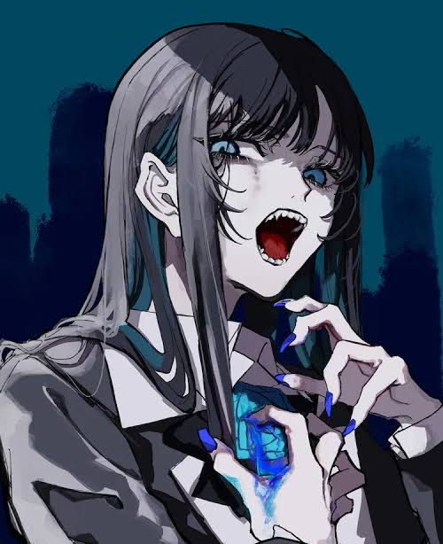

POPULAR

唱 (Show)
September 6, 2023
Composed by Giga & TeddyLoid, Show is a chaotic, genre-bending Electro EDM carnival anthem created for Universal Studios Japan's Halloween Horror Nights.

THIS IS
Ado (アド) is a Japanese singer and former utaite who began posting vocal covers in 2017 at the age of 14, inspired by VOCALOID culture and iconic internet singers. After gaining traction with her feature on "Shikabaneeze" in 2020, she skyrocketed to global fame later that year with her mainstream debut single "Usseewa" under Virgin Music/Cloud Nine. Renowned for her incredible vocal range (spanning over four octaves), she effortlessly shifts between dark, aggressive growls, theatrical voice-acting tones, and crystal-clear falsettos. From her headlining work on the One Piece Film: Red soundtrack to signing with Geffen Records and embarking on world tours, Ado continues to dominate global charts while remaining deeply rooted in her utaite origins.

September 6, 2023
Composed by Giga & TeddyLoid, Show is a chaotic, genre-bending Electro EDM carnival anthem created for Universal Studios Japan's Halloween Horror Nights.
SELECT A CLIP OF A CONCERT TO WATCH
Experience Ado's powerful live vocal performance of 'New Genesis', featuring electrification and high-octane stage energy.
An aggressive rock live clip showcasing Ado's signature raspy growls and energetic stage silhouette presence.
A thrilling live performance of her breakout debut track that catapulted her into international stardom.
Dynamic live electronic production accompanied by Ado's soaring vocal runs and intense crowd energy.